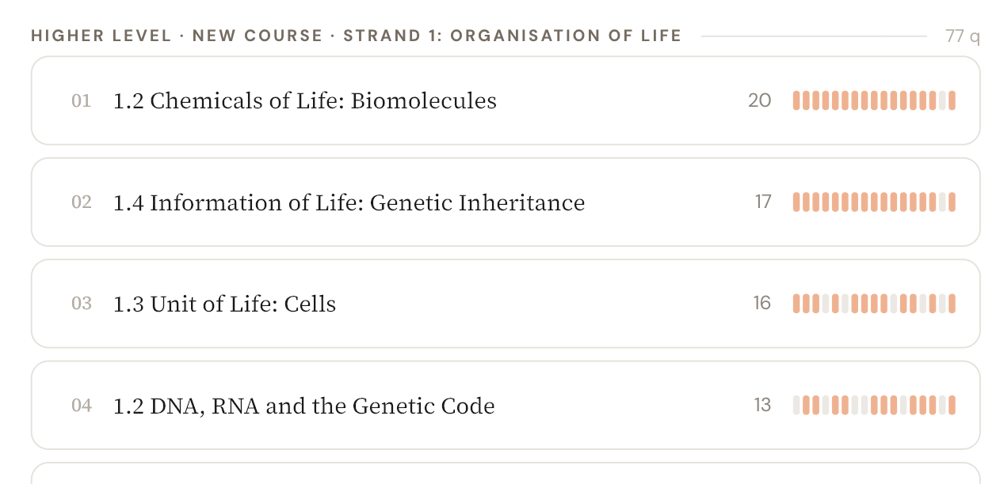
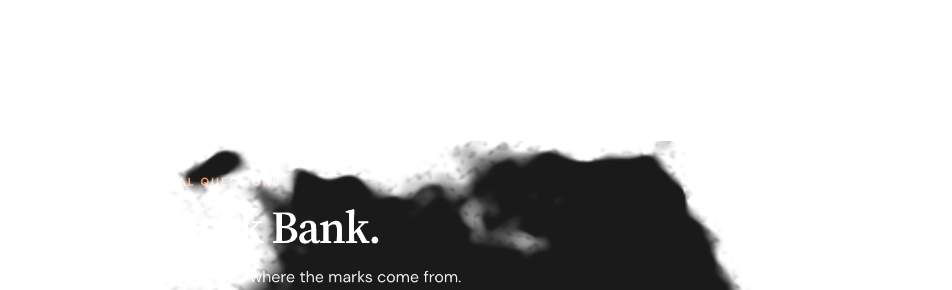

12 September 2026 · Interaction study
A clearer picture.
A better entrance.
Three ways to read the Topic Atlas.
Four ways to reveal a chapter. Try them at both sizes.
These directions are not live.
Topic Atlas
Make the years mean something.
The current marks are hard to decode. Each direction gives question count and years covered their own labels, while keeping the original topic names and subject grouping.
See the current display ↗

The number of distinct tagged questions.
The number of distinct exam years with a tagged question.
Three questions in 2024 add 3 questions, but just 1 year. New-course labels here organise historical questions; these are archive counts.
Chapter portals
Let the page open cleanly.
The cloud effect comes from an expanding ink-blot mask. These alternatives use a defined edge or a small, controlled movement. The same Mark Bank surface sits underneath every option.
See the current reveal ↗

Your shortlist
Which feels like Nextstepuni?
You can choose a topic layout and a reveal independently. Shortlisting here records your preference on this board; it does not publish a change.